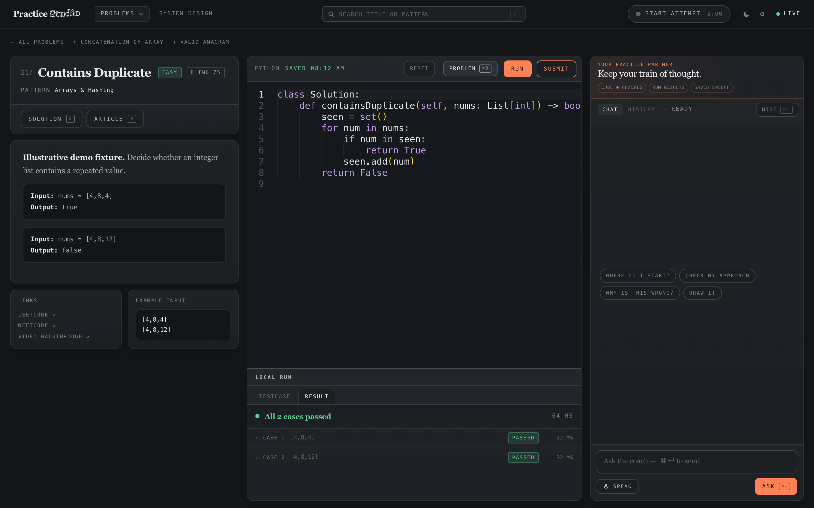
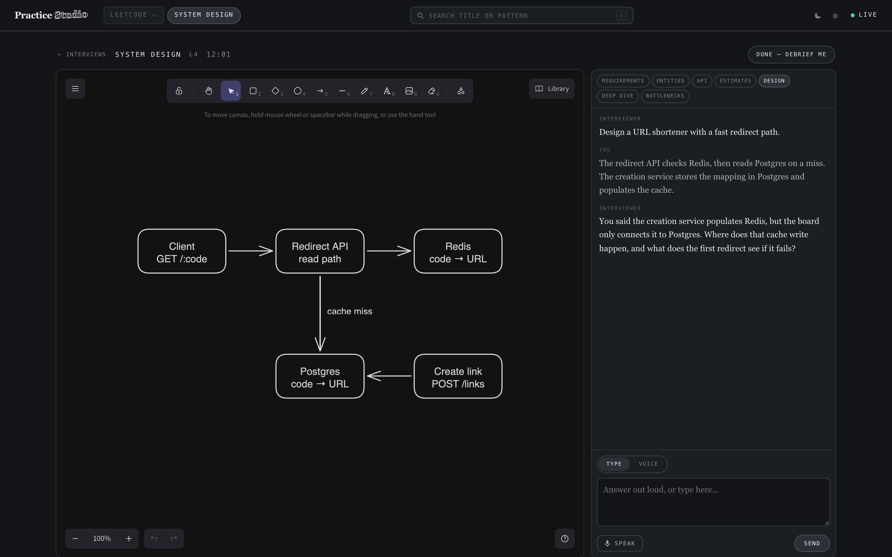
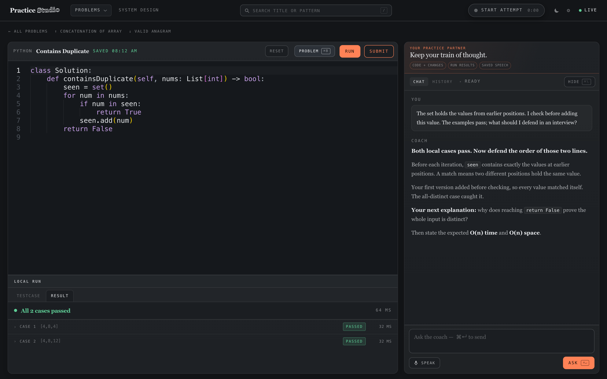

Stay in
the problem.
Your code. Your thinking. Your whiteboard.
One interview workspace that connects them.
An AI practice partner with the context to ask a better next question. Built for your Mac, with your work stored locally.
Watch the walkthrough ↓Run it yourself ↗The answer is only
half the interview.
How you got there matters. Studio connects what you write, what you run, what you say, and what you draw—so the follow-up can meet you where you actually are.
Present for
the whole attempt.
Keep a conversation beside your code. Each question brings the current buffer, changes, recent run results, elapsed time, and available transcripts.
Think aloud during a recorded attempt. End it, and the coach reviews the session. Leave the problem, and an answer can keep streaming in the background.
buffer → diff → tests → reasoningYou choose when to ask or record. The coach does not independently watch your desktop or interrupt.

Think out loud.
Keep the thought.
On-device speech recognition turns your explanation into text. Dictate a question, or record the whole attempt while you code. In system-design Voice mode, a pause hands the turn back to the interviewer.
Parakeet / FluidAudio · recognition runs on your Mac after model download. Coaching uses Claude's connected service.
I check for the value before adding it to the set, otherwise the current value would match itself. The set contains only values from earlier positions
Synthetic voice input · actual on-device transcript. Play to follow the recognized word timings. Inspect the output ↗
Voice setup ↗It follows
your architecture.
Draw on a real Excalidraw canvas. Studio turns components and connections into a graph for the interviewer, including what changed since the last turn.
“You said the creation service populates Redis, but the board only connects it to Postgres.”
Scripted demo response. In real interviews, the latest board graph accompanies your next answer.

From first attempt
to a better explanation.
Actual app. Real local Python runs.
Scripted coaching and original fixtures.
Silent walkthrough with on-screen captions. No private practice data or model requests are used. How it is made ↗
Find your atmosphere.
A printed journal. A drafting table.
A terminal after midnight. Make it yours.

Your machine.
Your practice.
No Studio account. No hosted Studio backend. Your solutions, transcripts, and session records live on disk.
macOS · Node 22+ · Python 3. Claude Code is optional for coaching; voice additionally needs Swift 6, macOS 14+, and the speech model.
Explore the repository ↗git clone https://github.com/dhirajcdry/practice-studio.git
cd practice-studio
npm start
# No frontend build. No npm install.
# Open http://127.0.0.1:4173